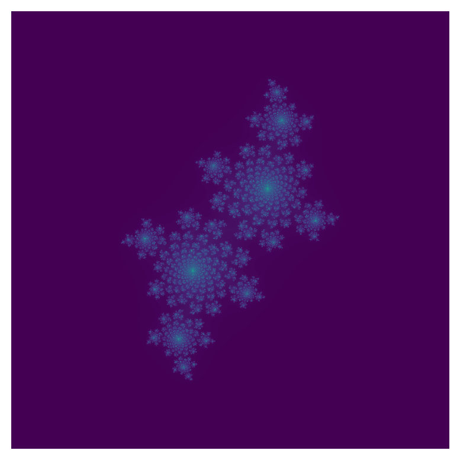

Scientific Computing
numba addresses a long-standing problem in scientific computing.
.py file or within pythonpython program “runs” the codenumba-cuda (NVIDIA GPU Numba) exists, but I haven’t seen it used much.@
@jit is the much-ballyhoo’ed decorator.x = np.arange(100).reshape(10, 10)
@jit
def go_fast(a): # Function is compiled to machine code when called the first time
trace = 0.0
for i in range(a.shape[0]): # Numba likes loops
trace += np.tanh(a[i, i]) # Numba likes NumPy functions
return a + trace # Numba likes NumPy broadcasting
_ = go_fast(x)import pandas as pd
x = {'a': [1, 2, 3], 'b': [20, 30, 40]}
@jit(forceobj=True, looplift=True) # Need to use object mode, try and compile loops!
def use_pandas(a): # Function will not benefit from Numba jit
df = pd.DataFrame.from_dict(a) # Numba doesn't know about pd.DataFrame
df += 1 # Numba doesn't understand what this is
return df.cov() # or this!
_ = use_pandas(x)object mode: Slow Python mode, works for pandasnonpython: Fast compiled mode, works for NumPynonpython
timetime supports time.perf_counter()Return the value (in fractional seconds) of a performance counter, i.e. a clock with the highest available resolution to measure a short duration.
…served as the fundamental gravitational potential in Newton’s law of universal gravitation.
\[ \tfrac{146189x^{10}-109395x^8+90090x^6-30030x^4+3465x^2-63}{256} \]
p_ten() with NumPy@jitjitnogil@jit(nopython=True, nogil=True, parallel=True)
def p_ten(x):
return (46189*x**10-109395*x**8+90090*x**6-30030*x**4+3456*x*2-63)//256
p_ten(np_arr) # Compile
t = time.perf_counter()
p_ten(np_arr)
ng = time.perf_counter() - t
ng, pt # no gil, parallel true(0.13921239995397627, 0.1383495000191033)C:\Users\cd-desk\AppData\Local\Programs\Python\Python312\Lib\site-packages\numba\core\typed_passes.py:336: NumbaPerformanceWarning:
The keyword argument 'parallel=True' was specified but no transformation for parallel execution was possible.
To find out why, try turning on parallel diagnostics, see https://numba.readthedocs.io/en/stable/user/parallel.html#diagnostics for help.
File "..\..\..\..\..\AppData\Local\Temp\ipykernel_19136\2073800990.py", line 1:
<source missing, REPL/exec in use?>
(22357606058205098,
iinfo(min=-2147483648, max=2147483647, dtype=int32),
iinfo(min=-9223372036854775808, max=9223372036854775807, dtype=int64))np.int64cfunc instead of jitout(in), so / is float(int, int)from numba import cfunc, int64
@cfunc(int64(int64))
def p_ten(x):
return (46189*x**10-109395*x**8+90090*x**6-30030*x**4+3456*x*2-63)//256
p_ten(np_arr) # Compile
t = time.perf_counter()
p_ten(np_arr)
time.perf_counter() - t3.9947370998561382Intel provides a short vector math library (SVML) that contains a large number of optimised transcendental functions available for use as compiler intrinsics
tbb (Intel) or OpenMP (otherwise).tbbfloat_arr = np_arr / 7
# add fastmath to decorator, change // to /
# `njit` means `jit(nopython=True`
from numba import njit
@njit(parallel=True)
def p_ten(x):
return (46189.*x**10.-109395.*x**8.+90090.*x**6.-30030.*x**4.+3456.*x*2.-63.)/256.
p_ten(np_arr) # Compile
t = time.perf_counter()
p_ten(np_arr)
float_t = time.perf_counter() - t
float_t0.9699231998529285fastmath option.@njit(fastmath=True, parallel=True)
def p_ten(x):
return (46189.*x**10.-109395.*x**8.+90090.*x**6.-30030.*x**4.+3456.*x*2.-63.)/256.
p_ten(np_arr) # Compile
t = time.perf_counter()
p_ten(np_arr)
fast_t = time.perf_counter() - t
fast_t, float_t, fast_t/float_t, float_t/fast_t(0.1389130000025034, 0.9699231998529285, 0.1432206179041465, 6.982234922832631)j (i is too frequently use).dtype=np.complex128\[ f_c(z) = z^2 + c \]
\[ J(f_c) \]
\[ J(f_c) \{ z \in \mathbb{C} : \forall n \in \mathbb{N} : |f_c^nN(z)| \leq R \]
reshape and linspace together.np.absolute()imshow to plot the result.
x, imaginary as y, and iterations as color.f_c
z
import numpy as np
import matplotlib.pyplot as plt
from numba import njit
@njit
def iterator(m, c, z):
for i in range(m):
z = z**2 + c
if (np.absolute(z) > 2):
return i
return i
# m: max iterations, c: c
def j_f(m, c):
real = np.linspace(-2,2,1000)
imag = (0 + 1j) * real
comp = real.reshape(-1,1) + imag
f_vec = np.vectorize(iterator, excluded={0,1})
return f_vec(m, c, comp)
# m: max iterations, c: c
def visualize(m, c):
arr = j_f(m,c)
plt.imshow(arr)
plt.axis('off')
plt.savefig("julia.png", bbox_inches="tight", pad_inches=0)
visualize(1000, -0.4 + 0.6j)